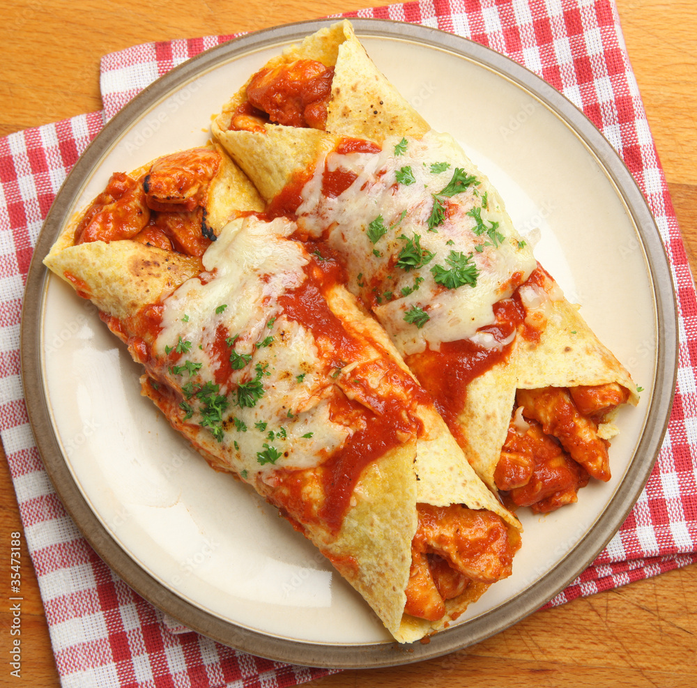

Enchiladas
Home

Enchilada recipe I wish I made more often. They are objectively the
best anyone has ever eaten.
Ingredients
- Tofu
- Sweet potato
- Red bell pepper
- Chili peppers:
- Jalap
- Poblano
- Whatever they have that's spicy
- Cheese
- Tortillas
Red Sauce ingredients
- White flour
- Tomato paste
- Broth
- Spice mix:
- Chili powder
- Cumin
- Paprika
- Onion powder
- Garlic powder
- Dried oregano
Enchiladas Steps
- Press and cut the tofu into bit-size cubes
- Toss the cubes in some cornstarch and spices
- Cube the sweet potato to similar size and toss in spices
- Get the tofu and sweet potato cubes in the oven
Make the Red Sauce
- Toast the white flour and spices in a saucepan for a few minute
- Make a hole in the middle of the pan and add all the tomato paste
- Whisk constantly for 15 minutes while slowly adding the broth
- After 15 minutes fold in some cheese and let it melt
- Mix the tofu and sweet potato with 1/2 of the red sauce
Construct and bake
- Use a deep pan to assemble enchilada by placing 1/8 of the filling
- Compact the 8 enchiladas side-by-side in the pan
- Pour the remaining red sauce over the top of the enchiladas and sprinkle on cheese
- Bake for 20 minutes then eat them all too fast